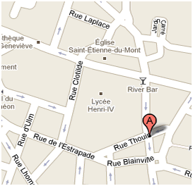

Where to Find Us
Cafe Fontenebleu - Rua das panificadoras, 001 Sala 001 - Curitiba-PR
Telephone: (41) 3000-0001
We are in the old bakers' quarter, on the corner of a quiet street two blocks from the main square. The building is the one with the green awning; the entrance is on the side street, not on the avenue.
